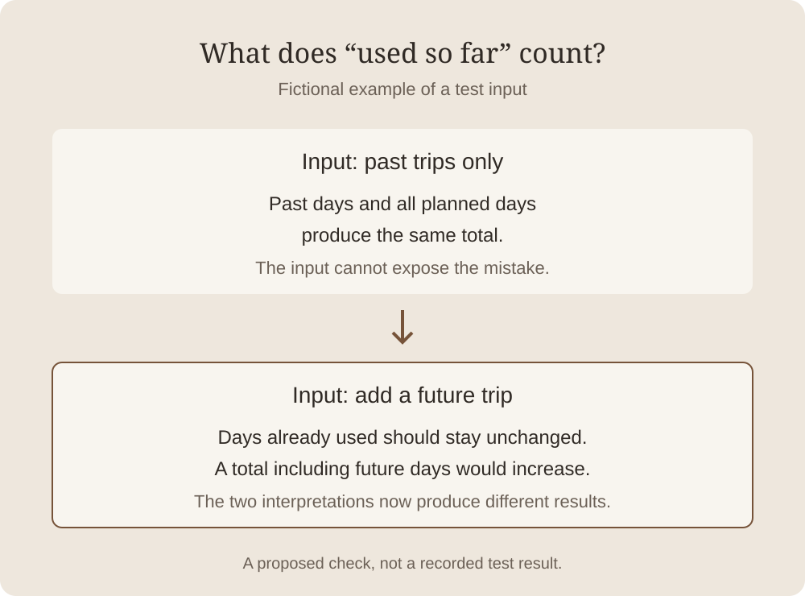

AI-assisted engineering
How I’m building verification into AI-assisted development
Turning engineering experience into a Definition of Done: tests, review perspectives and evidence for accepting AI-assisted work.
The takeaway
Choose inputs and observations that can expose a mistake, record what actually ran and keep untested behaviour visible.
An agent’s completion report leaves questions to answer
When an AI agent tells me a feature is finished, I want to know what it actually checked. A passing test tells me something useful about the behaviour it exercised. I still need to understand whether that behaviour matches what someone using the app needs.
I’ve worked on software since 2007. Building Travel Document Vault, my independent app, has given me a reason to turn that experience into explicit expectations that agents can follow. Reporting a change as complete should mean supplying evidence for those expectations, including any checks that could not be completed.
This is the role of my Definition of Done. It brings together the questions I want answered before accepting a feature, from its calculations and error handling to usability and privacy.
The Definition of Done grows when a review exposes a gap
I’ve developed the process with AI agents as the app has grown. Reviews have exposed gaps, including missing screen states and test data that could not distinguish the intended behaviour from a plausible alternative. Each finding gives me a reason to reconsider what the completion evidence should contain.
A useful addition explains what evidence would settle the question. “Check the error handling” leaves a lot to interpretation. Asking for the failure condition, the message shown and the route back to a usable state gives the review something concrete to examine.
There is a maintenance cost here. A growing checklist can become repetitive or stop matching the product. I need to review the requirements too, particularly when a feature changes the assumptions behind an earlier check.
Test data must separate the right answer from a plausible one
Consider a fictional travel summary labelled “days used so far”. Its calculation might accidentally include a future trip. If the test data contains only past trips, the correct calculation and the faulty one return the same total. A screenshot could look entirely reasonable.
Add a future trip and the difference becomes visible. The test can now ask whether the displayed total agrees with the label. The dates, calculation and wording need to be examined together.
This is the question I want the verification process to keep asking: what would make this result demonstrably wrong? More assertions against the same undemanding input may leave the original assumption untouched.

Different checks need different evidence
Unit tests let me examine focused behaviour with controlled inputs. End-to-end tests, including Detox, exercise journeys through the running app. Visual review helps examine the screens and states presented along the way. A result from one of these checks does not establish that the others ran.
I also use simulated personas to review the experience from different perspectives. A hurried person may struggle with a recovery step that seems obvious to someone carefully following instructions. A cautious person may need clearer wording before continuing. These reviews can suggest questions and reveal friction, but they are AI simulations, not research with real users.
The evidence available to a reviewer matters. A static capture can support a finding about visible wording or layout. It cannot establish how a screen reader announces a control or whether an interaction works on a physical device. Those need their own observations.
Privacy is also an explicit review question. The check needs to name the relevant data expectation and how it will be examined. Listing privacy in the Definition of Done does not establish that a particular feature has satisfied it.
What I ask each verification layer to establish
This is how I organise the questions. The completion record still needs to show which checks actually ran for a particular change.
| Verification layer | Question I want answered | Evidence to look for | What it cannot establish alone |
|---|---|---|---|
| Unit tests | Does the focused logic match the requirement? | Controlled inputs, expected values and actual results | A complete journey through the app |
| End-to-end tests | Can the relevant journey reach its intended outcome? | A run through the running app, including relevant failure paths | Behaviour outside that run’s inputs and environment |
| Visual review | Are the required states clear and readable? | Captures of the intended states, tied to the reviewed version | Interaction or screen-reader behaviour from a still image |
| Simulated personas | Where might different perspectives reveal friction? | Questions and observations grounded in the available screens or journey | Evidence that real users succeed |
| Privacy review | Does the feature respect its stated data expectations? | A specific expectation and evidence of the relevant behaviour | Every security or misuse risk |
| Security review | Could a restriction be bypassed or information exposed? | Scoped checks, findings, fixes and unresolved risks | A guarantee of security or an independent audit |
| Device and acceptance review | Is there enough evidence to accept this change? | Relevant device observations and a record of remaining gaps | Behaviour on every device or in every situation |
Security review asks how a feature could be misused
For me, security adds another question to the review: how could this feature be misused? A feature can behave as intended while allowing an action it should prevent.
In a fictional document app, I would ask whether a restricted action is still rejected when the usual screen is bypassed, and whether an error message reveals information it should keep private. Those questions need evidence of their own.
I want security questions raised while the design can still change, followed by checks of the implementation and release. When a finding leads to a fix, a repeatable regression test can help catch the same failure in later changes. The record should say what was examined and what remains unresolved; an automated scan or an AI review should not be presented as an independent security audit.
Automation makes the checks repeatable and the gaps visible
For a solo developer, repeatedly holding every expectation in my head is a poor way to manage quality. Writing those expectations down makes it possible for agents to run checks and return evidence in a form I can inspect.
For the fictional travel summary, a completion record could start with the following fields. The observation must come from the run; the expected result alone cannot fill it.
The aim is to reduce repetitive checking and dependence on memory. Acceptance still involves judgement. Device behaviour, the quality of the test inputs and the meaning of a requirement can need further investigation even when automated checks pass.
Illustrative completion record, not an executed test
Claim: the total counts only days already used.
Input: one completed trip and one future trip.
Expected: adding the future trip leaves the total unchanged.
Observed: record the actual output after running the check.
Version/environment: identify the change and test setup.
Unchecked: list behaviour this run did not exercise.An AI-generated analysis also needs a route back to the evidence
The person accepting an AI-generated analysis needs similar access to the logic and evidence behind it. That connects my development checks with a different part of my work: analytics.
At Visokio, where I work on Omniscope, the team’s verifiable analytics approach gives end users ways to do that. Insight Explorer presents visual answers alongside inspectable queries and transformations. People can examine calculations and query lineage, inspect the chart configuration and compare the result with the source data.
For a fictional sales question, that might mean checking which records contributed to a regional total, which filters were applied and how the values were grouped. A chart helps someone explore the breakdown while the underlying logic lets them challenge the calculation. Useful work can remain available to edit and rerun.
That gives the user a practical way to verify an answer before acting on it. The assumptions and source data still need checking; the value is having access to the evidence needed to do so.
Choose one claim and try to disprove it
For your next AI-assisted change, choose one claim you would otherwise accept from the completion report. Find an input or observation that would expose a wrong interpretation. Run the check against the actual change and record what remains untested.
If the check cannot distinguish the intended behaviour from a plausible mistake, improve the input or the observation before adding more checks. That is the kind of verification I want built into each feature: specific enough to catch a failure, repeatable where possible, and clear about what still needs attention.
Sources
Thanks for reading.
Share this note